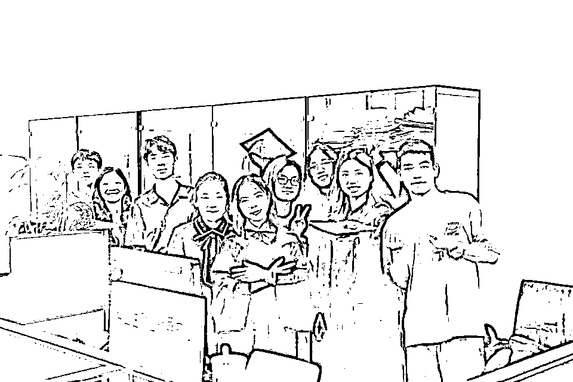
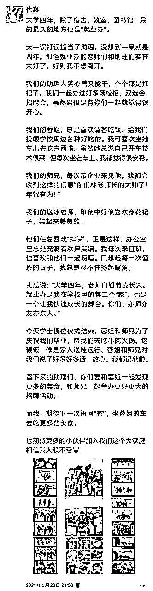

来源：https://x6rsxr7w3l.feishu.cn/docx/VvSrduWJGoaCCfxNnSscpyqEntg
Hi，欢迎打开这篇文章。
我是优嘉。
人最重要的是改变自己的认知和思维方式，进而才能改变自己的行为，改变结果。
所谓思维方式，就是遇到事情，你是如何想的？
如何想，就会影响如何做。如何做，就会影响结果。
要想改变结果，要从改变如何想开始。
2024年开启了一个新的系列内容：思维方式
在这个系列里面，我会分享我认为是正确的、好的思维方式，也会分享我看到的错误思维方式。
希望这个系列能够带给你启发。
今天分享的思维方式是：先找到一个切口。
国庆假期，在家见了两个长辈，他们的小孩都即将进入到社会工作，希望我能和他们聊聊，给点建议。
大道理对他们来说，听太多了。我再说一遍，毫无意义。
我选择和他们说了一下我自己过往的经历，看看是否能给他们一些新的启发。
在和他们分享自己一路以来的经历时，也是对自己的过往，做复盘。
突然发现，自己原来已经走了这么远。
在复盘的过程中，我发现自己做每一件事，都擅长找到一个切口。怎么理解呢？我给大家讲3个故事。
我在广东上大学。
算是离开家乡，去外地上学。
从进入大学前，我就特别向往，大学能够自己独立赚钱的生活。
于是，刚来学校，就开始留心各种赚钱的信息。
但是，来到一个人生地不熟的地方，一没背景，二没资源，唯一拥有的就是吃苦耐劳的精神和时间。
当时有学长学姐发布，奶茶店的兼职，我毫不犹豫的去了。
奶茶店，就是帮忙点单，打包，有时间，还帮忙制作奶茶。
刚开始做的时候，面对一堆客户，我手忙脚乱。
再到慢慢的，轻车熟路，可以一个人独当一面。
锻炼了我面对客户沟通的能力，锻炼了我灵活应变的能力。
老板娘也很认可我的工作能力，经常带我出去玩，请我吃饭。
但是，我知道，这种赚钱方式，效益不够高。
所以，我就一边干着，一边去找新的赚钱机会。
我去面试了多个新的岗位，并成功拿到了offer。
比如，学校就业指导中心，我成功竞选学生助理。
一呆，就是大学整整四年。


这四年，这个岗位，给了我太多的机会。
因为它，我自学了推文技能，管理官方的公众号。
因为它，我接触了大量进学校招聘的企业，担任了多家企业的校园大使。既能赚钱，又能扩展营销能力，还能拓展商业视野。
因为它，我找到了第一份在中海地产的实习。
因为它，每年都要和毕业生接触，我结识了很多很多的师兄师姐。
……
比如，学校学生互助中心，作为导师去辅导他人学习。
有了第一个学期亮眼的成绩，我就有了机会辅导别人学习。成了学生互助学习中心的导师，每个月都有一笔不错的辅导费用！
比如，学校大型活动体育馆，担任活动员，参与每一场活动的举办。
在这里，参与了音乐节、明星演唱会、学校毕业典礼、篮球比赛等等活动，结识了好多朋友。
……
我为什么分享这段经历？
是因为，有好几个人听过我的经历，就问了我一句：你有能力，居然去奶茶店做兼职？
可能在他们的眼里，奶茶店兼职，是一个很low的工作。
但是，我并不是从这个角度看问题。
我知道，奶茶店兼职，是一个靠体力赚钱的事情。
但是，初来乍到，没资源，没背景，凭什么拿到更好的机会？
每个人到了一个新地方，得先找到一个切口，先下场干，才会慢慢接触到更多的机会。
我想找赚钱机会，那我先找到一个当下马上就能干的事情，先进到赚钱的圈子里，然后再慢慢升级。
我会把奶茶店的兼职，当作一个进圈子的入口。
进到圈子以后，慢慢积累自己的能力，我再接触更多的信息，去拿到更好的机会。
从0开始的时候，不要有那么多的标签，这个工作很low，那个工作很高级。
在你还很小的时候，保持中立，多接触，多下场干，才会有更多的可能性。
这就是我想要和你分享的第一个故事。
第二个故事：我做运营的经历。
我学的是财务专业，为什么后来进入到运营的圈子？
大二去中海实习，发现自己不喜欢做财务。
就一直在探索新的可能性。
大三下学期，因为疫情呆在家里，有了很多业余时间，去网上了解更多信息。
无意中看到了黄有璨讲运营的岗位。
了解到他出了一本《运营之光》书籍。
我就花时间，完整的读完了这本书。
我发现，我对运营这个岗位充满兴趣。
我就在网上搜索了相关的岗位，搜索了和运营相关的所有公众号，去了解更多的信息。
大三暑假，即使疫情还不太让出门，我就在线上找各种岗位，看有没有工作机会。
后来参加运营社的一个训练营，发现他们有招实习生，我就去面试。
面试通过以后，就去上海实习三个月。
在这里，遇到了我第一个领导波波，教会我很多运营的知识，锻炼了我很多能力。
在这里，因为他们做的是运营技能的培训，就有机会接触到各种运营前辈。
这对我大四找工作，有了很大的帮助。
借着认识的前辈，了解到每个人在做的业务。
通过对比，我去了一位前辈的创业公司，找到了我毕业后的第一份工作，直播运营。
人生的机会，就是这样慢慢打开的。
从找到一个小切口，先进圈子，慢慢积累自己的能力，慢慢看到了更多的机会。
第三个故事，今年换公司。
新公司，意味着换一个新的环境。
在一个新的环境里，我如何从0开始，15天内快速拿到项目新机会？
和我同期一起进来的小伙伴，有5个。
我老大会通过一些小测试，来看每个人的能力，来安排项目。
而且，前期项目数量不多的情况下，要靠硬实力来说服他，凭什么选你不选别人？
竞争其实很激烈，很残酷。
那我如何在这5个人中，快速脱颖而出拿到项目机会？
这个过程其实非常有意思。
还是应用我说的方法，找到小切口。
我身上有很多的能力，我会短视频、会直播、会管理小团队、会做项目管理、会销售、会策划、会发售等等等。
但是，我要找到一个切口，快速让老大看到我具备做项目的能力。
他第一天给我们开了个会议，说了对合作的规划，以及要求我们具备哪些能力。
我开完会的当天，我就写了一份会议总结，发给了他。
注意，这个任务，他并没有要求我做。
但是，我为什么做？因为我想要通过这份文档，去展示我的能力。
他看完，回复了一个👍
我是5个人里面，唯一一个做这件事的人。
战场是没有硝烟的，很多战争，在你看不见的地方，就已经结束了。
这就是看不见的比拼，在看不见的地方，去争取我想要的机会。
我老大正式对所有人出的第一个考题是，描述某个项目的情况，让你作为项目负责人，出一份项目规划表，时间2小时。
他讲的信息其实很少，根据他给的信息，压根就无法做项目的推进。
当时，就有人会去找他，问项目更多的信息。
我也知道，需要更多的信息，才能做规划。
但是，时间很紧，你需要快速交出一份答卷。
我没有打算去了解更多的信息，而是通过项目假设，来规划了整个项目框架，展示了项目管理进程表。
做完考题后，我们全员一起开会，看每个人的答卷。
当时，有另外一个领导发言：明知道这个项目是个坑，压根就做不了，为什么你不提？
我当然知道是个坑啊！
但是，我需要通过这个切口，展示我项目管理的能力。
这就是我的目的。
我老大看完所有人的答卷，对我的点评是，优嘉的项目管理能力很专业，很强。
我让他看到了我做项目管理的能力，让他有了第一层的专业信任。
还有一次，我认为是很大的考验是，做项目咨询。
我们聊了8个客户，我们需要把8个客户的项目情况，整理成文档。
要知道，能听懂这8个客户的项目，需要一定的商业背景和理解能力。
还需要通过可视化的方式，表达出这8个客户的项目情况。
这个考验其实还蛮大的。
我在这份文档中花了很多心思。
这份文档，拿到了他很高的评价。
一次次的小事，小切口，我展示了我的专业能力。
他对我的评价就是，很稳。很有潜力，我最看好的项目策划人选。
我来了15天，就拿到了两个项目机会。
我当时还不以为意，我以为是每个人都有分配项目。
但是，后来开会才知道，我是拥有项目最多的人，而且都是大项目。
同期进来的一些小伙伴，在这些看似很细节的地方，做的不用心，或者不去做，失去了很多机会。
我一直都是秉承一个做事风格，初来乍到，放低姿态，从小事做起，才会有更多的机会。
这就是我想和你分享的第三个故事。
看完这几个故事，我相信你对“先找到一个小切口”思维方式，应该有了更具象的理解。
先找到一个小切口，是面对所有事情，都可以用的方法。
本质是，找到一个先能进入圈子，下场实践的切口。
我们很难马上站到一个很高的位置，都是从小事慢慢积累上去的。
我们也很难马上掌握某个项目全流程，都是从一个环节一个环节累积上去的。
找到一个小切口，快速进入，快速积累，快速跳到下一个位置。
分享《有钱人和你想的不一样》书中的一段内容，和我想要表达的观点是一致的。
“从你现在所在的位置开始，用你现有的一切，加入游戏下场玩吧。”
“我在“巴特勒妈妈烘焙屋”找到一份工作；我实在很想跟你说他们马上就看出我天赋异禀，让我当总裁，但是，唉，不知道为什么他们没看出来，也一点都不在乎我的领导能力，所以我只能跟你说我是从打杂做起，做的是扫地、洗碗这些事。
你可能会认为，做这样的工作必须吞掉自尊，但我从来不那样想。我为自己设定的任务是认识糕点这一行，所以很感激有这机会花别人的钱来学习，还能赚些零用钱。”
我和你分享的这些内容，是想要表达的一种思维方式。
想要进圈子，看到圈子里的更多机会，拿到更多的机会，即使你能力再强，过去背景再强，都先找到一个切口，先下场干。
不要眼高手低，不要什么都看不上。
还有，再分享一个最近看润宇前辈直播，他分享了新加坡旅游的感悟。
有1个观点，我非常有启发。
他说，新加坡当年是被迫独立生存，杀出一条自己的道路，成为现在的强国。
他们是怎么做到的？
极其务实。
在初期，不要说什么是高级，什么是low，不要有那么多标签，能活下来，就很好。
包容所有人，不评价。
多点交流，多点机会。
不要把自己的边界划的那么大。
这就是新加坡的生存之道。
润宇还将新加坡的例子，类比大厂被裁的员工，需要被迫谋生；类比，刚刚起步的创业者。
他说，你会从中学到很多，在你还很“小”的生存之道。
我听完，对新加坡的历史非常感兴趣，就去翻看了第一任领导李光耀的传记。
从这段起家的过程，学到非常多，分享几个观点。
1、要想活下来，绝对不抱有“等靠要”心态，要自立更生。
当时有好几个东南亚殖民地，同期独立。
他都去走访了一遍，想看看大家是如何应对这个问题。
有些国家是等着其他国家的高额补偿金活着，这就是一种等靠要的心态。
李光耀说，新加坡坚决不能这样。
“国际社会没有责任为我们提供生计，我们不能够靠讨饭钵过活。”他要给新加坡人的心中注入危机感和压力。
2、求商若渴。
李光耀指示负责经济的部长们四处出击，到世界各地找机会。
独立后的几年里，几乎任何有意向、有可能来新加坡的世界各地厂商在新加坡都像贵宾一样大受欢迎。
不论能不能成功，所有的机会李光耀都想试一试。
3、新加坡没有优质的自然资源，核心资产是什么？
人民的信任。
别人对你的信任，是一笔非常宝贵的资产，用好它。
新加坡人优秀品质：勤劳、节俭、好学。
优秀的品质，也是致富的资产。
这只是其中一部分。
我看完李光耀的传记《一生家国：李光耀传奇》，我对新加坡，对李光耀前辈，有了很多敬畏，也学到了非常多！
感兴趣可以去读一读，会看到一个有格局，有视野的人，是如何思考问题的，能极大扩展你的视野。
希望对你有启发。